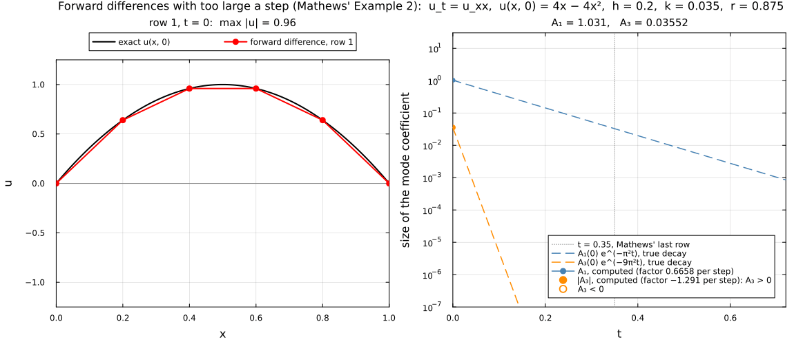
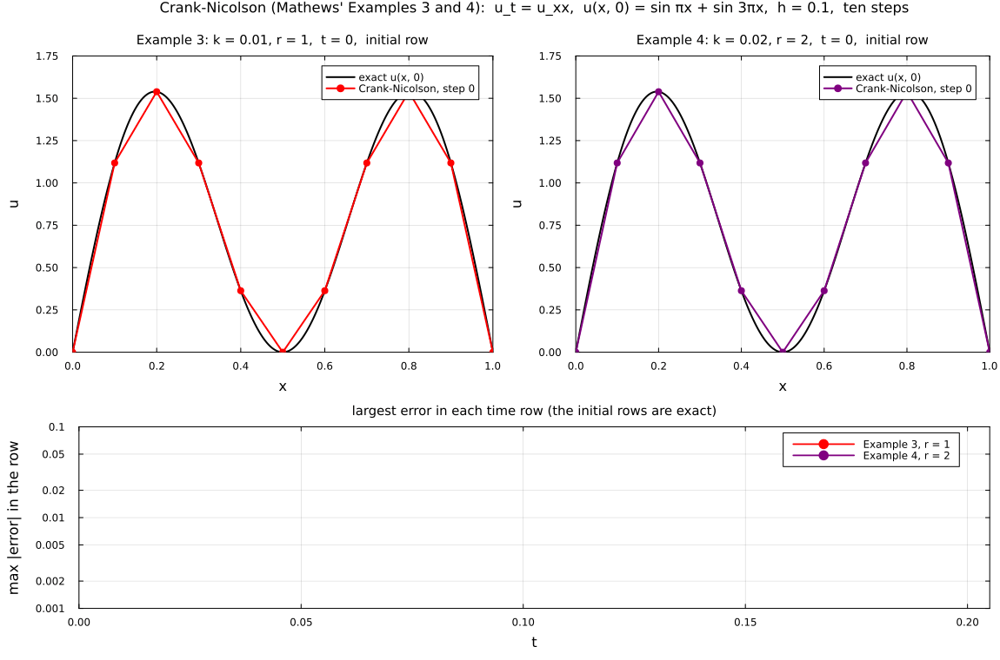

Crank-Nicolson Method
Source inspiration: (Mathew 2000-2019).
Description
The one-dimensional heat equation \(u_t = c^2 u_{xx}\) describes the temperature \(u(x, t)\) in an insulated rod \(0 \le x \le a\) whose ends are held at fixed temperatures and whose initial temperature is \(u(x, 0) = f(x)\). A finite-difference method lays a grid over the rectangle \(0 \le x \le a\), \(0 \le t \le b\), with spacing \(h\) in \(x\) and time step \(k\), and computes the temperatures row by row, from the initial row \(t = 0\) forward in time. How the method behaves depends on the dimensionless ratio \(r = c^2 k / h^2\). The simplest method, the explicit forward-difference method, computes each new temperature directly from three old ones, but it is stable only when \(r \le \tfrac12\). For larger \(r\), rapidly oscillating error components can grow at every step until they swamp the solution, as in Example 2 below.
The Crank-Nicolson method, due to John Crank and Phyllis Nicolson, centres the difference equation halfway between two time rows. It averages the second-difference approximation of \(u_{xx}\) over the old row \(j\) and the new row \(j+1\):
\[ -r\,u_{i-1,j+1} + (2 + 2r)\,u_{i,j+1} - r\,u_{i+1,j+1} \;=\; r\,u_{i-1,j} + (2 - 2r)\,u_{i,j} + r\,u_{i+1,j}. \]
The new temperatures are coupled, so every time step solves a tridiagonal linear system. In return, the method is second-order accurate in both \(h\) and \(k\) and stable for every \(r > 0\) (general results, stated below). Mathews’ module first runs the forward-difference method twice, with \(r = 0.5\) and with the “too large” \(r = 0.875\) (Examples 1 and 2), and then runs Crank-Nicolson with \(r = 1\) and \(r = 2\) (Examples 3 and 4). Every number below has been recomputed: Examples 1 and 2 in exact rational arithmetic, Examples 3 and 4 in double precision, and all four compared with the Fourier series solution of the heat equation.
Animations
Each animation below advances the temperature profile \(u(x, t_j)\) one time row per frame and draws the exact solution at the same time (black) beside it. The computed values \(u_{i,j}\) at the grid points are joined by straight lines, as in Mathews’ plots. Mathews draws all the rows at once as a three-dimensional surface over the indices \(i\) and \(j\); each frame here is one row of that surface. The second panel shows what the profile alone does not: the error at the grid points (Case 1), the sizes of the two sine modes in the data (Case 2), the largest error in each row (Case 3), or the part of the solution caused by a small perturbation (Case 4). The exact solution of Examples 1 and 2 is the Fourier series below, summed over the odd terms up to \(p = 1999\); that of Examples 3 and 4 is the closed form given there. The numbers in the titles and legends agree with the tables in the examples.
Mathews’ module links no animation, and his animation archive has none for partial differential equations, so all four animations are new, with no Mathews original. Cases 1 to 3 animate Mathews’ four examples with his grids and step sizes; Case 2 continues Example 2 past his last row, to \(t = 0.70\). Case 4 animates the sawtooth experiment of Example 4 (“What stability buys”), which is not in the module. Not animated are Mathews’ three-dimensional surfaces themselves (including his surfaces of the exact solution in Examples 3 and 4, drawn here as the black curves), the refinement table of Example 3, and the sawtooth figures for \(r = 1\).
Julia source scripts that generated these animations are linked under each case.
Case 1 — Example 1: forward differences with \(r = 0.5\), \(h = 0.2\), \(k = 0.02\)
Behavior: With \(r = \tfrac12\) each new value is the average of its two neighbours in the row below, and the profile sinks smoothly toward zero, symmetric about \(x = 0.5\), with the earlier rows left behind in a faint stack. Every computed row lies below the exact solution at the interior grid points, so the error panel stays negative. The largest error in the first step, \(0.02411\), is at \(x = 0.2\) and \(0.8\); from the second step on it is at \(x = 0.4\) and \(0.6\), where it reaches its largest value, \(0.02582\), at \(t = 0.1\) (row \(6\)), and then falls to \(0.01853\) at \(t = 0.2\), where the computed values are \(u(0.2) = 0.0728125\) and \(u(0.4) = 0.1178125\).

Case 2 — Example 2: forward differences with \(r = 0.875\), continued to \(t = 0.70\)
Behavior: The computed profile is a combination of the two discrete sine modes \(\sin(\pi x_i)\) and \(\sin(3\pi x_i)\), and the right panel follows their coefficients \(A_1\) and \(A_3\) on a logarithmic scale. \(A_1\) shrinks by the factor \(0.665780\) per step, a little faster than the true factor \(e^{-\pi^2 k} = 0.707912\). \(A_3\) should shrink by \(e^{-9\pi^2 k} = 0.044649\) per step; instead it is multiplied by \(G_3 = -1.290780\), so it changes sign at every step (open and filled markers) and grows. From row \(7\) (\(t = 0.21\)) on, \(|A_3|\) is larger than \(A_1\), and the profile flips between two zigzag shapes from one step to the next, with the previous row drawn dashed. At Mathews’ last row, \(t = 0.35\), the largest computed value is \(0.4441\) while the exact solution is at most \(0.03262\). The run then continues: at row \(16\) (\(t = 0.525\)) the profile leaves the fixed axis \([-1.25, 1.25]\) with \(\max|u| = 1.553\), and at row \(21\) (\(t = 0.70\)) the largest computed value is \(5.569\), while the exact solution is at most \(0.001031\).

Case 3 — Examples 3 and 4: Crank-Nicolson with \(r = 1\) and \(r = 2\)
Behavior: The two examples run side by side, one time step of each per frame, so Example 4 covers twice the time. In both, the two humps of the initial temperature flatten into a single hump shaped like \(\sin(\pi x)\), the computed values stay positive and smooth, and no oscillation appears. With \(r = 1\) (left) the computed profile follows the exact one closely from the first step: the largest error in a row is \(0.004998\) after one step, falls to \(0.002028\) at \(t = 0.05\) and rises slowly to \(0.002716\) at \(t = 0.1\). With \(r = 2\) (right) the first step flattens the humps too much, and the largest error is \(0.0738\), at \(x = 0.5\). After that the error falls at every step, to \(0.001381\) at \(t = 0.2\). From \(t = 0.08\) on it is below Example 3’s error at the same time, for the reason given in Example 4 (\(0.001979\) against \(0.002716\) at \(t = 0.1\)).

Case 4 — What stability buys: a sawtooth of size \(0.001\) on Example 4’s grid, \(r = 2\)
Behavior: Both methods start from Example 4’s data with \(\mp 0.001\) added at the interior grid points (\(-0.001\) at \(x = 0.1\), \(+0.001\) at \(x = 0.2\), and so on), and each is also run without it; \(\delta\) is the difference between the two runs, drawn in the lower panels on an axis rescaled every step. In both methods \(\delta\) changes sign at every interior grid point at every step. Under forward differences, at four times their stability limit, the size of \(\delta\) is multiplied by exactly \(7\) in each of the first four steps and by between \(6.85\) and \(7\) in the later ones, close to \(|G_9| = 6.804226\), the size of the factor of the mode \(p = 9\). The perturbed run leaves the axis at \(t = 0.08\) (\(\max|u| = 2.679\)), and by \(t = 0.2\) the largest \(|\delta|\) is \(2.611 \times 10^{5}\). The forward-difference run without the sawtooth (dashed) stays bounded but is inaccurate, as Example 4 notes. Under Crank-Nicolson, the size of \(\delta\) is multiplied by between \(0.586\) and \(0.694\) per step, to \(1.055 \times 10^{-5}\) at \(t = 0.2\), and the perturbed and unperturbed runs cannot be told apart at the scale of the profile.

The Heat Equation and the Grid
Find \(u(x, t)\) on \(R = \{(x, t) : 0 \le x \le a,\ 0 \le t \le b\}\) with
\[ u_t(x, t) = c^2\, u_{xx}(x, t) \quad \text{for } 0 < x < a,\ 0 < t < b, \tag{1} \]
the initial condition \(u(x, 0) = f(x)\) for \(0 \le x \le a\), and the boundary conditions \(u(0, t) = c_1\) and \(u(a, t) = c_2\) for \(0 \le t \le b\).
The heat equation can be solved analytically with Fourier series. Mathews uses it as the prototype of a parabolic equation for numerical solution, and the series solution then serves as the check on the numerical one.
Following Mathews, the grid has \(n\) columns and \(m\) rows:
\[ h = \frac{a}{n - 1}, \qquad k = \frac{b}{m - 1}, \qquad x_i = (i - 1)h,\ i = 1, \ldots, n, \qquad t_j = (j - 1)k,\ j = 1, \ldots, m, \]
and \(u_{i,j}\) approximates \(u(x_i, t_j)\). The first row holds the initial values \(u_{i,1} = f(x_i)\), and the first and last columns hold the boundary values \(u_{1,j} = c_1\) and \(u_{n,j} = c_2\). The methods below compute the interior values \(u_{2,j}, \ldots, u_{n-1,j}\) one row at a time, and the ratio
\[ r = \frac{c^2 k}{h^2} \tag{2} \]
appears in all of them.
All four of Mathews’ examples use \(a = 1\), \(c = 1\) and \(c_1 = c_2 = 0\): a rod of length one whose ends are held at temperature zero.
The Forward-Difference Method
At a grid point \((x, t)\), replace \(u_t\) by the forward difference and \(u_{xx}\) by the central second difference:
\[ u_t(x, t) = \frac{u(x, t + k) - u(x, t)}{k} + O(k), \qquad u_{xx}(x, t) = \frac{u(x - h, t) - 2u(x, t) + u(x + h, t)}{h^2} + O(h^2). \]
Substituting both into (1), dropping the error terms and multiplying by \(k\) gives the forward-difference (explicit) method.
\[ u_{i,j+1} = (1 - 2r)\,u_{i,j} + r\,\bigl(u_{i-1,j} + u_{i+1,j}\bigr), \qquad i = 2, \ldots, n - 1. \tag{3} \]
Each new value comes directly from three values in the row below, so no equations have to be solved. When \(r \le \tfrac12\), the three weights \(r\), \(1 - 2r\) and \(r\) are nonnegative and add up to \(1\), so each new value is a weighted average of old ones and can be neither larger than the largest old value nor smaller than the smallest. When \(r > \tfrac12\) the centre weight \(1 - 2r\) is negative and this argument fails.
For the problem (1) with fixed end temperatures, write the error at the interior grid points of a row as a combination of the discrete sine modes \(\sin(p\pi x_i/a)\), \(p = 1, \ldots, n - 2\). Formula (3) multiplies the coefficient of mode \(p\) by
\[ G_p = 1 - 4r \sin^2\!\Bigl(\frac{p\pi h}{2a}\Bigr) \]
at each step. Every \(|G_p| \le 1\) on every grid exactly when \(r \le \tfrac12\). For \(r > \tfrac12\) the highest modes of a fine enough grid have \(G_p < -1\), so they grow and change sign at every step. The method’s local truncation error is \(O(k + h^2)\).
Example 1 — Forward differences with \(r = 0.5\)
Solve \(u_t = u_{xx}\) for \(0 \le x \le 1\), \(0 \le t \le 0.2\), with \(u(0, t) = u(1, t) = 0\) and initial temperature
\[ u(x, 0) = f(x) = 4x - 4x^2. \]
Use the forward-difference method with \(h = 0.2\) and \(k = 0.02\), and find the temperatures for \(t = 0.02, 0.04, \ldots, 0.20\).
Mathews’ grid has \(n = 6\) columns and \(m = 11\) rows, so \(h = 1/5\), \(k = 0.2/10 = 0.02\) and
\[ r = \frac{c^2 k}{h^2} = \frac{1\,(0.02)}{(0.2)^2} = 0.5. \]
(The module’s statement of this example says “\(r = 1\)”, but the parameters it then uses give \(r = 0.5\), which is what Mathews’ program computes. The “\(r = 1\)” is probably meant to be \(c = 1\).)
Step 1: with \(r = \tfrac12\) the centre weight \(1 - 2r\) vanishes, and (3) becomes the average of the two neighbours:
\[ u_{i,j+1} = \tfrac12\bigl(u_{i-1,j} + u_{i+1,j}\bigr). \]
Step 2: the initial row is \(f(0), f(0.2), \ldots, f(1) = 0,\ 0.64,\ 0.96,\ 0.96,\ 0.64,\ 0\). The first time step gives
\[ u_{2,2} = \tfrac12(0 + 0.96) = 0.48, \qquad u_{3,2} = \tfrac12(0.64 + 0.96) = 0.80, \]
and by symmetry \(u_{4,2} = 0.80\), \(u_{5,2} = 0.48\).
Step 3: the second time step gives \(u_{2,3} = \tfrac12(0 + 0.80) = 0.40\) and \(u_{3,3} = \tfrac12(0.48 + 0.80) = 0.64\), and so on.
Because \(f\) is symmetric about \(x = \tfrac12\), so is every row: the values at \(x = 0.6\) and \(0.8\) equal those at \(0.4\) and \(0.2\), and the end values are \(0\). The table lists the two independent columns. With \(r = \tfrac12\) every value is a terminating decimal, and the table gives them exactly (Mathews prints six significant digits, for example \(0.117813\) for \(0.1178125\)). The last two columns are the exact solution, from the Fourier series below.
| \(t\) | \(u(0.2, t)\), numerical | \(u(0.4, t)\), numerical | \(u(0.2, t)\), exact | \(u(0.4, t)\), exact |
|---|---|---|---|---|
| 0.00 | 0.64 | 0.96 | 0.640000 | 0.960000 |
| 0.02 | 0.48 | 0.80 | 0.504110 | 0.801911 |
| 0.04 | 0.40 | 0.64 | 0.409799 | 0.660741 |
| 0.06 | 0.32 | 0.52 | 0.335713 | 0.542801 |
| 0.08 | 0.26 | 0.42 | 0.275461 | 0.445639 |
| 0.10 | 0.21 | 0.34 | 0.226098 | 0.365823 |
| 0.12 | 0.17 | 0.275 | 0.185594 | 0.300295 |
| 0.14 | 0.1375 | 0.2225 | 0.152348 | 0.246503 |
| 0.16 | 0.11125 | 0.18 | 0.125057 | 0.202347 |
| 0.18 | 0.09 | 0.145625 | 0.102656 | 0.166100 |
| 0.20 | 0.0728125 | 0.1178125 | 0.084267 | 0.136346 |
Verification: the Fourier sine coefficients of \(4x - 4x^2\) on \([0, 1]\) are \(32/(p^3\pi^3)\) for odd \(p\) and \(0\) for even \(p\), so the exact solution is
\[ u(x, t) = \sum_{p \text{ odd}} \frac{32}{p^3 \pi^3}\, \sin(p\pi x)\, e^{-p^2 \pi^2 t}. \]
The table’s exact values were summed to \(30\) digits with the odd terms up to \(p = 1999\), and at \(t = 0\) this truncated sum reproduces \(f\) to within \(1.1 \times 10^{-10}\). The numerical temperatures decrease at every interior grid point from each row to the next, as the true temperatures do, and the method’s values lie below the true ones at every interior grid point with \(t > 0\). The largest error is \(0.0258\), at \(x = 0.4\) and \(0.6\) when \(t = 0.10\); at \(t = 0.20\) the errors are \(-0.0115\) at \(x = 0.2\) and \(-0.0185\) at \(x = 0.4\). The grid is coarse (\(h = 0.2\)), and the forward difference in \(t\) is only first-order accurate.
Mathews displays the result in two ways: a table of all \(m \times n = 11 \times 6\) values, printed one row per time level to six significant digits, and a three-dimensional plot of the values \(u_{i,j}\) against the column index \(i\) (axis “x(i)”, \(1\) to \(6\)) and the row index \(j\) (axis “t(j)”, \(1\) to \(11\)), viewed from the point \((4, 2, 3)\).
Example 2 — Forward differences with \(r = 0.875\): the step is too large
Solve the same problem, \(u_t = u_{xx}\) with \(u(0, t) = u(1, t) = 0\) and \(f(x) = 4x - 4x^2\), now on the longer interval \(0 \le t \le 0.35\), with \(h = 0.2\) and \(k = 0.035\), and find the temperatures for \(t = 0.035, 0.070, \ldots, 0.35\).
Again \(n = 6\) and \(m = 11\), so \(h = 0.2\), \(k = 0.35/10 = 0.035\) and
\[ r = \frac{1\,(0.035)}{(0.2)^2} = 0.875 > \tfrac12. \]
(As in Example 1, the statement in the module says “\(r = 1\)”, while the parameters give \(r = 0.875\), which is the value Mathews’ program uses.)
Step 1: with \(r = \tfrac78\), formula (3) is
\[ u_{i,j+1} = -0.75\,u_{i,j} + 0.875\,\bigl(u_{i-1,j} + u_{i+1,j}\bigr). \]
The centre weight is negative.
Step 2: the first time step gives
\[ u_{2,2} = -0.75(0.64) + 0.875(0 + 0.96) = 0.36, \qquad u_{3,2} = -0.75(0.96) + 0.875(0.64 + 0.96) = 0.68. \]
Continuing gives the table, which agrees with Mathews’ printed values in every entry. The values are exact rational numbers, rounded here to six decimal places.
| \(t\) | \(u(0.2, t)\), numerical | \(u(0.4, t)\), numerical | \(u(0.2, t)\), exact | \(u(0.4, t)\), exact |
|---|---|---|---|---|
| 0.000 | 0.640000 | 0.960000 | 0.640000 | 0.960000 |
| 0.035 | 0.360000 | 0.680000 | 0.431059 | 0.693838 |
| 0.070 | 0.325000 | 0.400000 | 0.304075 | 0.491841 |
| 0.105 | 0.106250 | 0.334375 | 0.215210 | 0.348210 |
| 0.140 | 0.212891 | 0.134766 | 0.152348 | 0.246503 |
| 0.175 | −0.041748 | 0.203125 | 0.107848 | 0.174502 |
| 0.210 | 0.209045 | −0.011139 | 0.076347 | 0.123532 |
| 0.245 | −0.166531 | 0.181522 | 0.054047 | 0.087450 |
| 0.280 | 0.283730 | −0.123024 | 0.038261 | 0.061907 |
| 0.315 | −0.320444 | 0.232886 | 0.027085 | 0.043825 |
| 0.350 | 0.444108 | −0.251277 | 0.019174 | 0.031024 |
The true temperatures are positive and decrease steadily. The computed ones do not. From \(t = 0.14\) on, the value at \(x = 0.2\) changes sign at every step, and from \(t = 0.175\) on so does the value at \(x = 0.4\), always with the opposite sign. Negative temperatures appear although no temperature in the problem is below \(0\). At \(t = 0.35\) the computed value at \(x = 0.2\) is \(0.444108\), while the true temperature there is \(0.019174\).
Why it fails. On this grid the initial values are exactly a combination of two discrete sine modes (\(f\) is symmetric about \(x = \tfrac12\), so the even modes are absent):
\[ f(x_i) = 1.031357\,\sin(\pi x_i) + 0.035522\,\sin(3\pi x_i), \qquad i = 1, \ldots, 6. \]
Formula (3) multiplies the two coefficients by \(G_1 = 0.665780\) and \(G_3 = -1.290780\) at every step. So the computed solution is exactly
\[ u_{i,j} = 1.031357\,(0.665780)^{j-1} \sin(\pi x_i) + 0.035522\,(-1.290780)^{j-1} \sin(3\pi x_i). \]
The first term decays faster than the true mode \(e^{-\pi^2 t}\), whose factor per step is \(0.707912\). The second term should decay by the factor \(e^{-9\pi^2 k} = 0.044649\) per step; instead it grows by \(1.290780\) in size and changes sign. Ten steps multiply it by \((-1.290780)^{10} = 12.8387\), and at \(t = 0.35\) it contributes \(0.433734\) of the \(0.444108\) at \(x = 0.2\). For the mode \(p = 3\) on this grid, \(|G_3| \le 1\) requires \(r \le 0.763932\), and Mathews’ \(r = 0.875\) is past that. Continuing the run past Mathews’ last row, the largest computed value in size reaches \(1.55\) at \(t = 0.525\) (row \(16\)) and \(5.57\) at \(t = 0.70\) (row \(21\)).
Mathews shows the same table and the same three-dimensional plot as in Example 1. In his plot the surface turns jagged at the later time rows.
The Crank-Nicolson Method
The forward-difference method evaluates \(u_{xx}\) on the old row only, and that is the source of both its first-order accuracy in \(t\) and its stability limit. Crank and Nicolson instead centred the approximation at the point \((x, t + k/2)\), halfway between the rows \(t\) and \(t + k\). There the forward difference becomes a central difference, and it is second-order accurate:
\[ u_t\Bigl(x, t + \frac{k}{2}\Bigr) = \frac{u(x, t + k) - u(x, t)}{k} + O(k^2). \tag{4} \]
For \(u_{xx}(x, t + k/2)\) they used the average of the central second differences on the two rows. The average of the values at \(t\) and \(t + k\) also differs from the value at \(t + k/2\) by \(O(k^2)\):
\[ u_{xx}\Bigl(x, t + \frac{k}{2}\Bigr) = \frac{1}{2h^2}\Bigl[\bigl(u(x - h, t + k) - 2u(x, t + k) + u(x + h, t + k)\bigr) + \bigl(u(x - h, t) - 2u(x, t) + u(x + h, t)\bigr)\Bigr] + O(h^2 + k^2). \tag{5} \]
Setting (4) equal to \(c^2\) times (5), dropping the error terms and multiplying by \(2k\) gives
\[ 2\bigl(u_{i,j+1} - u_{i,j}\bigr) = r\bigl(u_{i-1,j+1} - 2u_{i,j+1} + u_{i+1,j+1}\bigr) + r\bigl(u_{i-1,j} - 2u_{i,j} + u_{i+1,j}\bigr). \]
Collecting the unknown values of row \(j + 1\) on the left:
\[ -r\,u_{i-1,j+1} + (2 + 2r)\,u_{i,j+1} - r\,u_{i+1,j+1} = r\,u_{i-1,j} + (2 - 2r)\,u_{i,j} + r\,u_{i+1,j}, \qquad i = 2, \ldots, n - 1. \tag{6} \]
Mathews’ program divides (6) by \(r\), so its matrix has \(2 + 2/r\) on the diagonal and \(-1\) beside it, and its right-hand side is \(u_{i-1,j} + (2/r - 2)\,u_{i,j} + u_{i+1,j}\). With \(r = 1\) the formula is especially simple:
\[ -u_{i-1,j+1} + 4u_{i,j+1} - u_{i+1,j+1} = u_{i-1,j} + u_{i+1,j}. \]
The tridiagonal system
The values \(u_{1,j+1} = c_1\) and \(u_{n,j+1} = c_2\) are known, so their terms in (6) move to the right-hand side. That leaves a system of \(n - 2\) equations in the \(n - 2\) unknowns \(u_{2,j+1}, \ldots, u_{n-1,j+1}\):
\[ \begin{pmatrix} 2 + 2r & -r & & & \\ -r & 2 + 2r & -r & & \\ & \ddots & \ddots & \ddots & \\ & & -r & 2 + 2r & -r \\ & & & -r & 2 + 2r \end{pmatrix} \begin{pmatrix} u_{2,j+1} \\ u_{3,j+1} \\ \vdots \\ u_{n-2,j+1} \\ u_{n-1,j+1} \end{pmatrix} = \begin{pmatrix} b_2 + r c_1 \\ b_3 \\ \vdots \\ b_{n-2} \\ b_{n-1} + r c_2 \end{pmatrix}, \tag{7} \]
where \(b_i = r\,u_{i-1,j} + (2 - 2r)\,u_{i,j} + r\,u_{i+1,j}\) is the right side of (6). The matrix is the same at every time step. It is strictly diagonally dominant (\(2 + 2r > 2r\)) and symmetric with eigenvalues \(2 + 2r - 2r\cos\bigl(p\pi/(n - 1)\bigr) > 2\), so it is nonsingular for every \(r > 0\). A tridiagonal system is solved by Gaussian elimination without pivoting in \(O(n)\) operations: one forward sweep eliminates the subdiagonal, and back substitution finds the unknowns (see Tri-Diagonal Matrices). Mathews’ TriDiagonal routine does exactly this. His program keeps all \(n\) rows, including the two boundary rows, which become the trivial equations \(u_{1,j+1} = c_1\) and \(u_{n,j+1} = c_2\). As he remarks, \(n - 2\) rows would do.
If the solution \(u\) is smooth, the local truncation error of (6) is \(O(h^2 + k^2)\). With fixed end temperatures, formula (6) multiplies the coefficient of the discrete sine mode \(p\) by
\[ G_p = \frac{1 - 2r\, s_p}{1 + 2r\, s_p}, \qquad s_p = \sin^2\!\Bigl(\frac{p\pi h}{2a}\Bigr), \]
at each step. Since \(r s_p > 0\), \(-1 < G_p < 1\) for every mode and every \(r > 0\). The method is unconditionally stable: no restriction on \(r\) is needed for stability.
Stability does not mean accuracy. A larger \(k\) still gives a larger error, and when \(2r s_p > 1\) the factor \(G_p\) is negative. Such a mode is not amplified, but it changes sign at every step while it decays. For large \(r\) the factors of the highest modes approach \(-1\), so these modes die out slowly, while the true solution damps them almost at once. When the initial data are rough, for example a discontinuity or a mismatch between \(f\) and the end temperatures, Crank-Nicolson with a large \(r\) can therefore show slowly fading oscillations. This is a general property of the method; Example 4 below checks it on a computed perturbation.
Algorithm
Given \(a\), \(b\), \(c\), \(f\), \(c_1\), \(c_2\) and the grid sizes \(n\) and \(m\):
- Set \(h = a/(n - 1)\), \(k = b/(m - 1)\) and \(r = c^2 k/h^2\).
- Fill the first row with \(u_{i,1} = f(x_i)\), \(i = 1, \ldots, n\), and the end columns with \(u_{1,j} = c_1\), \(u_{n,j} = c_2\), \(j = 1, \ldots, m\).
- Form the tridiagonal matrix of (7): \(2 + 2r\) on the diagonal and \(-r\) on the sub- and superdiagonals.
- For \(j = 1, \ldots, m - 1\): compute the right-hand side of (7) from row \(j\), and solve the tridiagonal system for row \(j + 1\).
Example 3 — Crank-Nicolson with \(r = 1\)
Solve \(u_t = u_{xx}\) for \(0 \le x \le 1\), \(0 \le t \le 0.1\), with \(u(0, t) = u(1, t) = 0\) and initial temperature
\[ u(x, 0) = f(x) = \sin(\pi x) + \sin(3\pi x). \]
Use the Crank-Nicolson method with \(h = 0.1\) and \(k = 0.01\), find the temperatures for \(t = 0.01, 0.02, \ldots, 0.10\), and compare them with the exact solution
\[ u(x, t) = \sin(\pi x)\, e^{-\pi^2 t} + \sin(3\pi x)\, e^{-9\pi^2 t}. \]
Mathews’ grid has \(n = 11\) columns and \(m = 11\) rows, so \(h = 0.1\), \(k = 0.01\) and
\[ r = \frac{1\,(0.01)}{(0.1)^2} = 1. \]
Step 1: with \(r = 1\), formula (6) is \(-u_{i-1,j+1} + 4u_{i,j+1} - u_{i+1,j+1} = u_{i-1,j} + u_{i+1,j}\) for \(i = 2, \ldots, 10\), a \(9 \times 9\) system with \(4\) on the diagonal and \(-1\) beside it.
Step 2: the initial row is symmetric about \(x = 0.5\), because \(\sin(\pi(1 - x)) = \sin(\pi x)\) and \(\sin(3\pi(1 - x)) = \sin(3\pi x)\). At \(x = 0.1, \ldots, 0.5\) it is
\[ f(0.1) = f(0.3) = \tfrac{\sqrt5}{2} = 1.118034, \quad f(0.2) = 1.538842, \quad f(0.4) = 0.363271, \quad f(0.5) = 0. \]
The right-hand sides \(b_i = u_{i-1,1} + u_{i+1,1}\) for the first step, at \(x = 0.1, 0.2, 0.3, 0.4, 0.5\), are
\[ 1.538842, \quad 2.236068, \quad 1.902113, \quad 1.118034, \quad 0.726543, \]
and the values at \(x = 0.6, \ldots, 0.9\) repeat these in reverse order.
Step 3: solving the tridiagonal system gives the second row, at \(x = 0.1, \ldots, 0.5\):
\[ u(x, 0.01) \approx 0.616905, \quad 0.928778, \quad 0.862137, \quad 0.617659, \quad 0.490465. \]
The residual of the system at the computed solution is below \(5 \times 10^{-16}\).
Step 4: repeating with the same matrix for nine more rows gives the table. Each row is symmetric about \(x = 0.5\), so only \(x = 0.1, \ldots, 0.5\) are listed; the last column is the largest error \(|u_{i,j} - u(x_i, t_j)|\) in the row.
| \(t\) | \(x = 0.1\) | \(x = 0.2\) | \(x = 0.3\) | \(x = 0.4\) | \(x = 0.5\) | max error |
|---|---|---|---|---|---|---|
| 0.00 | 1.118034 | 1.538842 | 1.118034 | 0.363271 | 0.000000 | 0 |
| 0.01 | 0.616905 | 0.928778 | 0.862137 | 0.617659 | 0.490465 | 0.00500 |
| 0.02 | 0.394184 | 0.647957 | 0.718601 | 0.680009 | 0.648834 | 0.00452 |
| 0.03 | 0.288660 | 0.506682 | 0.625285 | 0.666493 | 0.673251 | 0.00333 |
| 0.04 | 0.233112 | 0.425766 | 0.556006 | 0.625082 | 0.645788 | 0.00247 |
| 0.05 | 0.199450 | 0.372035 | 0.499571 | 0.575402 | 0.600242 | 0.00203 |
| 0.06 | 0.175881 | 0.331490 | 0.451058 | 0.525306 | 0.550354 | 0.00210 |
| 0.07 | 0.157405 | 0.298131 | 0.408178 | 0.477784 | 0.501545 | 0.00240 |
| 0.08 | 0.141858 | 0.269300 | 0.369759 | 0.433821 | 0.455802 | 0.00258 |
| 0.09 | 0.128262 | 0.243749 | 0.335117 | 0.393597 | 0.413709 | 0.00268 |
| 0.10 | 0.116144 | 0.220827 | 0.303787 | 0.356974 | 0.375286 | 0.00272 |
The two humps of the initial temperature, which peak at \(x \approx 0.196\) and \(x \approx 0.804\), flatten out quickly because the exponent of the \(\sin(3\pi x)\) term is nine times that of the \(\sin(\pi x)\) term. From \(t = 0.03\) on, each row rises from \(x = 0\) to its largest value at the centre \(x = 0.5\), and the profile approaches the shape of \(\sin(\pi x)\): the ratio \(u(0.1, t)/u(0.5, t)\) is \(0.3095\) at \(t = 0.1\), against \(\sin(0.1\pi) = 0.3090\). At every interior grid point the computed temperature rises or falls from one row to the next exactly when the true temperature does.
Verification: at \(t = 0.1\) the method and the exact solution compare as follows.
| \(x\) | 0.1 | 0.2 | 0.3 | 0.4 | 0.5 |
|---|---|---|---|---|---|
| Crank-Nicolson | 0.116144 | 0.220827 | 0.303787 | 0.356974 | 0.375286 |
| exact | 0.115285 | 0.219204 | 0.301570 | 0.354385 | 0.372569 |
| error | \(8.6 \times 10^{-4}\) | \(1.6 \times 10^{-3}\) | \(2.2 \times 10^{-3}\) | \(2.6 \times 10^{-3}\) | \(2.7 \times 10^{-3}\) |
The largest error over the whole run is \(0.00500\), at \(x = 0.2\) and \(x = 0.8\) in the first step. It falls to \(0.00203\) at \(t = 0.05\) and then rises slowly to \(0.00272\) at \(t = 0.1\).
These numbers can be explained exactly. The vectors \(\sin(p\pi x_i)\) are eigenvectors of the tridiagonal matrix, and the initial data contain only \(p = 1\) and \(p = 3\), so the computed solution is
\[ u_{i,j} = G_1^{\,j-1} \sin(\pi x_i) + G_3^{\,j-1} \sin(3\pi x_i), \qquad G_1 = 0.906680, \quad G_3 = 0.416215, \]
against the exact factors per step \(e^{-\pi^2 k} = 0.906018\) and \(e^{-9\pi^2 k} = 0.411369\). This formula reproduces the table to within \(4 \times 10^{-16}\). The \(\sin(3\pi x)\) term is negligible by \(t = 0.1\) (its exact size is \(e^{-0.9\pi^2} = 0.000139\)). The error that remains is almost all in the \(\sin(\pi x)\) term, whose computed amplitude \(G_1^{10}\) is \(0.73\%\) larger than \(e^{-\pi^2 (0.1)} = 0.372708\). That excess is \(0.00273\) at \(x = 0.5\), and the small error in the \(\sin(3\pi x)\) term takes off \(0.00002\), leaving \(0.00272\).
Second-order convergence. Halving \(h\) and \(k\) together, with \(k = h/10\), and comparing at \(t = 0.1\) shows the \(O(h^2 + k^2)\) accuracy:
| \(h\) | \(k\) | \(r\) | max error at \(t = 0.1\) | ratio |
|---|---|---|---|---|
| 0.1 | 0.01 | 1 | \(2.7165 \times 10^{-3}\) | |
| 0.05 | 0.005 | 2 | \(6.7920 \times 10^{-4}\) | 4.000 |
| 0.025 | 0.0025 | 4 | \(1.6979 \times 10^{-4}\) | 4.000 |
| 0.0125 | 0.00125 | 8 | \(4.2448 \times 10^{-5}\) | 4.000 |
Each halving divides the error by \(4\), and \(r\) doubles each time without any loss of stability. This refinement is not in Mathews’ module.
Mathews shows two three-dimensional plots, viewed from the point \((4, 2, 3)\): the computed values \(u_{i,j}\) against the indices \(i\) (axis “x(i)”, \(1\) to \(11\)) and \(j\) (axis “t(j)”, \(1\) to \(11\)), and the exact solution over \(0 \le t \le 0.1\), \(0 \le x \le 1\), drawn with an \(11 \times 11\) mesh of plot points. He compares the two pictures by eye and gives no table for this example.
Example 4 — Crank-Nicolson with \(r = 2\): is the method stable when \(r > 1\)?
Solve the problem of Example 3, \(u_t = u_{xx}\) with \(u(0, t) = u(1, t) = 0\) and \(f(x) = \sin(\pi x) + \sin(3\pi x)\), over the longer interval \(0 \le t \le 0.2\) with the same \(n = 11\) columns and \(m = 11\) rows. Now \(h = 0.1\), \(k = 0.2/10 = 0.02\) and
\[ r = \frac{1\,(0.02)}{(0.1)^2} = 2. \]
The temperatures are found for \(t = 0.02, 0.04, \ldots, 0.20\) and compared with the same exact solution.
(The module’s statement of this example repeats that of Example 3, with “\(r = 1\)” and \(t = 0.01, \ldots, 0.10\). Mathews’ program for it uses \(b = 0.2\) and \(n = m = 11\) and prints \(c^2 k / h^2 = 2\), and the page follows the program.)
Step 1: with \(r = 2\), Mathews’ divided form of (6) has \(2 + 2/r = 3\) on the diagonal and \(2/r - 2 = -1\) on the right:
\[ -u_{i-1,j+1} + 3u_{i,j+1} - u_{i+1,j+1} = u_{i-1,j} - u_{i,j} + u_{i+1,j}. \]
Step 2: from the initial row of Example 3, the right-hand sides at \(x = 0.1, \ldots, 0.5\) are
\[ 0.420808, \quad 0.697226, \quad 0.784079, \quad 0.754763, \quad 0.726543. \]
Step 3: solving the \(9 \times 9\) system gives
\[ u(x, 0.02) \approx 0.331768, \quad 0.574495, \quad 0.694492, \quad 0.724901, \quad 0.725448 \qquad (x = 0.1, \ldots, 0.5). \]
Step 4: nine more steps give the table.
| \(t\) | \(x = 0.1\) | \(x = 0.2\) | \(x = 0.3\) | \(x = 0.4\) | \(x = 0.5\) | max error |
|---|---|---|---|---|---|---|
| 0.00 | 1.118034 | 1.538842 | 1.118034 | 0.363271 | 0.000000 | 0 |
| 0.02 | 0.331768 | 0.574495 | 0.694492 | 0.724901 | 0.725448 | 0.0738 |
| 0.04 | 0.216128 | 0.405657 | 0.549078 | 0.636672 | 0.665899 | 0.0207 |
| 0.06 | 0.172153 | 0.326931 | 0.449091 | 0.527090 | 0.553875 | 0.00560 |
| 0.08 | 0.140932 | 0.268018 | 0.368810 | 0.433480 | 0.455755 | 0.00253 |
| 0.10 | 0.115751 | 0.220166 | 0.303025 | 0.356219 | 0.374548 | 0.00198 |
| 0.12 | 0.095105 | 0.180901 | 0.248988 | 0.292702 | 0.307765 | 0.00184 |
| 0.14 | 0.078146 | 0.148642 | 0.204588 | 0.240508 | 0.252885 | 0.00175 |
| 0.16 | 0.064211 | 0.122136 | 0.168106 | 0.197621 | 0.207791 | 0.00164 |
| 0.18 | 0.052761 | 0.100357 | 0.138130 | 0.162381 | 0.170738 | 0.00151 |
| 0.20 | 0.043353 | 0.082462 | 0.113499 | 0.133426 | 0.140292 | 0.00138 |
Is it stable? Yes. With \(r = 2\) (four times the forward-difference limit) the computed temperatures stay positive at every interior grid point and show no oscillation. At every interior grid point they rise or fall from one row to the next exactly when the true temperatures do, and from the second row on they decrease at every step. The error is largest after the first step, \(0.0738\) at \(x = 0.5\). There the two humps have been flattened too much: the factor applied to the \(\sin(3\pi x)\) term is \(G_3 = 0.096233\), against the true \(e^{-9\pi^2 k} = 0.169225\). After that the error falls at every step, to \(0.00138\) at \(t = 0.2\). The \(\sin(\pi x)\) term is again accurate, with \(G_1 = 0.821681\) against \(e^{-\pi^2 k} = 0.820869\).
Verification: at \(t = 0.2\) the comparison with the exact solution is:
| \(x\) | 0.1 | 0.2 | 0.3 | 0.4 | 0.5 |
|---|---|---|---|---|---|
| Crank-Nicolson | 0.043353 | 0.082462 | 0.113499 | 0.133426 | 0.140292 |
| exact | 0.042926 | 0.081650 | 0.112381 | 0.132112 | 0.138911 |
| error | \(4.3 \times 10^{-4}\) | \(8.1 \times 10^{-4}\) | \(1.1 \times 10^{-3}\) | \(1.3 \times 10^{-3}\) | \(1.4 \times 10^{-3}\) |
As in Example 3, the table equals \(G_1^{\,j-1}\sin(\pi x_i) + G_3^{\,j-1}\sin(3\pi x_i)\) to within \(5 \times 10^{-16}\). At \(t = 0.1\) the largest error, \(0.00198\), is slightly smaller than Example 3’s \(0.00272\) with half the time step. The reason is that the two errors in the \(\sin(\pi x)\) term partly cancel. The spatial error slows the decay: the discrete eigenvalue \(4\sin^2(\pi h/2)/h^2 = 9.788697\) is smaller than \(\pi^2 = 9.869604\). The time error speeds it up: the factor \((1 - z/2)/(1 + z/2)\) is smaller than \(e^{-z}\). With the larger \(k\) the time error is larger and cancels more of the spatial error.
What stability buys. On these smooth initial data the forward-difference method would not blow up either, at least not visibly in ten steps. The data contain only the modes \(p = 1\) and \(p = 3\), whose explicit factors are \(0.902113\) and \(0.175571\) for \(r = 1\) and \(0.804226\) and \(-0.648859\) for \(r = 2\), all less than \(1\) in size. Run on the grid of this example it stays bounded but is far less accurate (largest error \(0.80\), compared with \(0.074\) for Crank-Nicolson). The difference shows as soon as the data contain high modes. Add the sawtooth perturbation \(\pm 0.001\), alternating in sign, to the interior initial values. With \(r = 2\) the forward-difference method amplifies the perturbation to about \(2.6 \times 10^{5}\) by \(t = 0.2\), because its factor for the mode \(p = 9\) is \(-6.804226\). Crank-Nicolson damps the same perturbation to \(1.1 \times 10^{-5}\): its factors for \(p = 4, \ldots, 9\) are negative, from \(-0.160357\) to \(-0.592013\), so these components change sign at every step, but they shrink. (With \(r = 1\) on Example 3’s grid the figures are \(53\) for forward differences and \(1.2 \times 10^{-5}\) for Crank-Nicolson.)
Mathews shows the same two plots as in Example 3, the computed values against the indices \(i\) and \(j\) and the exact solution over \(0 \le t \le 0.2\), \(0 \le x \le 1\) with an \(11 \times 11\) mesh, both viewed from \((4, 2, 3)\), and leaves the comparison to the eye.
Summary
| Forward difference (3) | Crank-Nicolson (6) | |
|---|---|---|
| work per time step | explicit, \(O(n)\) | tridiagonal solve, \(O(n)\) |
| local truncation error (general) | \(O(k + h^2)\) | \(O(h^2 + k^2)\) |
| stability (general) | only for \(r \le \tfrac12\) | for every \(r > 0\) |
| Mathews’ runs | \(r = 0.5\) (Example 1): stable; \(r = 0.875\) (Example 2): oscillates and grows | \(r = 1\) (Example 3) and \(r = 2\) (Example 4): stable, largest error \(0.0050\) and \(0.074\) |